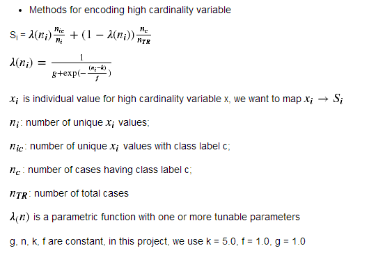

Background and Methods
In machine learning problems, we encounter categorical features very often, such as gender, address, zip code, etc. For low cardinality attributes, which only takes a small number of possible values, one hot encoding (OHE) is widely used. This encoding scheme represents each value of the original categorical with a binary vector with the i-th component set to one, and the rest set to zero. However, when having a high cardinality categorical feature with many unique values, OHE will give an extremely large sparse matrix, making it hard for application.
The most frequently used method for dealing with high cardinality attributes is clustering. The basic idea is to reduce the N different sets of values to K different sets of values, where K < N. There are several value grouping schemes, including grouping values that exhibit similar target statistics (hierarchical clustering), or to use information-theoretical metric to merge each possible pair of clusters. Another methodis to use Principle Component Analysis (PCA) to reduce categorical data to a numerical representation.
Categorical Encoding Using Target Statistics
The basic idea is to map individual values of a high-cardinality categorical attribute to an estimate of the probability or expected values of the dependent attribute. Let's take the 'building_id' attribute from the Two Sigma Connect Rental Listing Competition as an example. The 'building_id' attribute is a high cardinality attribute having 7585 unique values. The target variable takes 3 values: high, medium, and low. We map the individual values Xi to a scaler Si, representing an estimate of the probability of Y = c given X = Xi

Be careful of data leakage if you use cross validation.